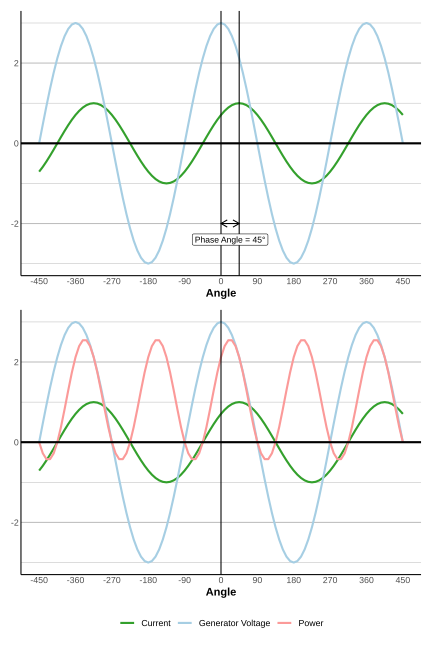
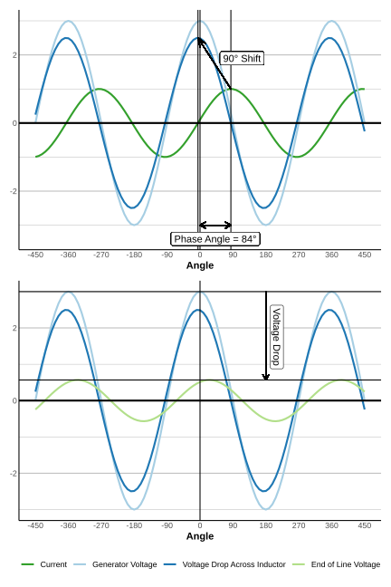
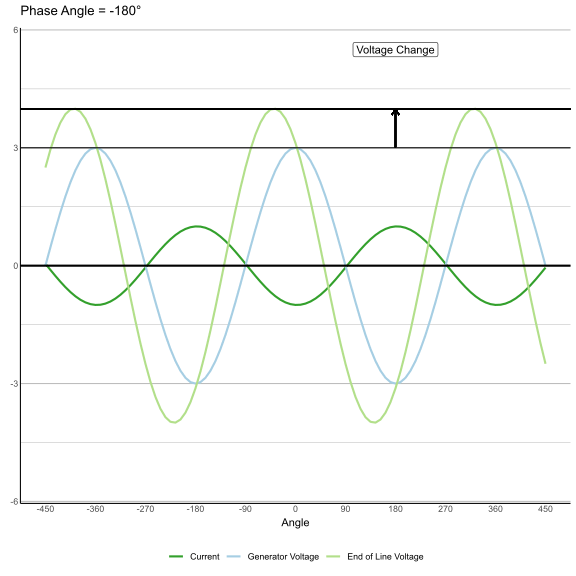

Reactive power has a reputation as a sort of secret sauce for electricity that can only be explained by analogies ranging from the useless (it’s the power moving back and forth) to the ridiculous (it’s like the foam on top of beer). My hope here is to explain the basics of reactive power without any analogies. The central idea is that the electric grid is based on currents and voltages that change direction 120 times every second. Even as these voltages and currents alternate, however, they can peak at different times. This timing difference is the essence of reactive power, and it affects the power available to consumers as well as the voltage across the grid and the stable operation of generators.
In this note I will go into more detail about the relation between reactive power and timing. I will also try to dive a bit deeper into the weeds and explain in some detail the relation between reactive power and reliability.
Voltage and Current
The two most fundamental quantities at any point in the power system are the voltage and the current. The voltage is the energy [1], and the current is the speed and direction at which the electrons are flowing. As a result of Tesla winning his famous dispute with Edison, almost all the power system uses alternating current. This means that the current changes direction 120 times per second (60 Hertz) forming a sine wave, shown as a dark green line in the top panel of figure 1. The voltage also moves up and down in a sine wave, alternating between positive and negative, shown as a light blue line in the figure. The voltage oscillations and the current oscillations do not have to be aligned. One can measure the difference in their respective peaks as a length of time, but generally people describe it as an angle – because, well, trigonometry turns out to be really useful for this sort of stuff. Peaks that are completely aligned differ by 0 degrees, while peaks that are completely out of alignment, where the maximum of one is at the same time as the minimum of the other, are said to be 180 degrees out of phase. The phase difference in the figure is 45 degrees, shown by the arrow in the top panel.

This angle between the voltage and the current, called the phase angle by the electrical engineers, is the underlying reality of reactive power. Put another way, reactive power is a bookkeeping device to keep track of this angle. A high level of reactive power means that the angle is closer to 90 degrees, while a negative level of reactive power means that the angle is closer to -90 degrees. (This direction is really a matter of convention, and one could also define things in the opposite way.)
The amount of power available at a point on a circuit is the product of the voltage and the current. The product of these two sine waves is the pink line in the bottom panel figure 1. Like the voltage and current, the power oscillates, but unlike those, it has a positive average value. This average is the power available to do work, what the engineers call "real power" (as opposed to "reactive power"). If the peak (ie, maximum) voltage multiplied by the peak current gives you the “apparent power”, the power that would be available if everything were in phase, the phase angle determines how much of that apparent power is actually available to do work, with less and less real power as the phase angle gets closer to plus or minus 90 degrees. The more out of phase voltage and current are, the less real power is available. [2]
Reactive power and voltage
The timing difference between the voltage and current peaks, and hence the amount of reactive power, is a result of the operation of the entire grid, from generators to transmission to consumers. The grid comprises many resistors, capacitors and inductors, with most load being in the form of resistance (such as an electrical heater) or inductance (such as a motor). Each of these has a different relation between current and voltage. The voltage drop across a resistor (the energy difference from one end of the resistor to the other) is directly proportional to the current that goes through the resistor. In other words, for a resistor, the voltage drop is in phase with the current. Inductors and capacitors, on the other hand, have their voltage drops 90 degrees and -90 degrees out of phase with the current, respectively. This means that they shift the phase angle (see figure 2), and the electrical engineers call this producing or absorbing reactive power.
This naturally leads to the relation between reactive power and voltage. It turns out that transmission lines act a bit like inductors (they also have resistance and capacitance, but you can ignore those for a short, lossless line). This means that the change in voltage from one end of the line to the other is 90 degrees out of phase with the current. The voltage at the end of the line is lowest when the sine waves for the initial voltage and the voltage drop are aligned. Since the voltage drop due to the inductance of the transmission line is 90 degrees out of phase from the current, the final voltage is lowest when the current is out of phase with the initial voltage by 90 degrees. In other words, the voltage drop is larger when the phase angle is closer to 90 degrees. In other words, the voltage drop is related to the amount of reactive power.
This is illustrated in Figure 3. Here, the current is again shown in dark green, and the voltage is shown in light blue. In the figure, the current and the voltage are a little less than 90 degrees out of phase. This is shown by the arrow on the bottom of the top panel. The voltage drop across the tranmission line is shown in dark blue. The diagonal arrow shows how this voltage drop is shifted 90 degrees from the current. The arrow points upwards because the voltage drop is a constant multiple of the current. In the bottom panel, the light green line shows the end of line voltage, which results from subtracting the voltage drop (dark blue) from the generator voltage (light blue). As voltage drop in this example is almost aligned with the voltage at the generator, when they are subtracted, the end of the line voltage is significantly lower than the generator voltage. An animated version of this for a range of phase angles is shown in Figure 4.
The operation of the power system requires that voltages to consumers remain roughly the same. This means that there can't be a large voltage drop across a transmission line, so high phase angles can cause trouble. Depending on the convention, you could say that in this situation, one needs more or less reactive power on the system. Most load is a combination of inductors and resistors, which lead to positive phase angles and voltage drops. If the voltage drops are too large, there are a variety of things one can do to compensate. One is to add capacitors to the system because they act in an opposite way from inductors, helping keep voltages in the desired range.


Generators and reactive power
The phase angle also affects the operation and stability of generators. Much of the electricity on the grid (but a lot less than there used to be!) arises from spinning generators. These generators work by rotating a magnetic field through stationary coils of wire to produce a voltage. The rotating magnetic field is generated by current loops on the “rotor”. The spinning of the rotor is driven by a turbine, which is fueled by the combustion of fossil fuels or the movement of water for a hydroelectric plant. Here, reactive power – the phase angle – again plays a role. This is because there are currents in the stationary wires, and they make their own magnetic field. If the phase angle is zero, this magnetic field is at a 90 degrees from the magnetic field of the rotor. But if the phase angle changes, the rotor magnetic field is no longer perpendicular to the field arising from the electrical current. This is illustrated in figure 5.
Because the magnetic field from the currents in the stator now partially points in a direction that is opposite to the field from the rotor, it partially counteracts that field, reducing the voltage created. To compensate for this and keep the voltage at the desired level, the operator of the generator must increase the generator’s magnetic field by increasing the current of the wires in the rotor. Sometimes one hears this described as a generator producing reactive power, but I think that’s misleading. The phase angle is really a function of the load on the grid. Instead, the phase angle affects the operating conditions of the generator. However, there are limits on how much the generator magnetic field can increase because the higher currents can lead to, for example, excess heating. This restricts the range of phase angles where the generator can operate, which is the same as a limit on reactive power.
Rotor angle stability
The stability of the grid also requires that all the spinning generators must spin at the same rate to maintain the frequency of the power system. [3] But people are continually flipping appliances off and on, varying the amount of energy a generator must provide. Even more significant are faults where a transmission line breaks or short circuits or a generator goes offline. Generators must be able to maintain their synchronized rotation both through these small changes in load and through these larger disruptive events.
Even though the generators all must spin at the same rate, the rotors aren’t necessarily all aligned [4]. Since the current is the movement of the electrons back and forth in the wire and must be the same at both ends of the wire, the difference in alignment of the generators is due to a difference in phase angles. If the rotor of one generator gets ahead of another, the current changes, which affects the force (torque) on the rotor. This change can either act to restore the rotor to its original position or push the rotor even farther out of alignment. This force is restoring when the difference in angles between the two generators is less than 90 degrees. However, even for angles less than 90 degrees, the force might not be large enough to restore the rotor synchronization for large disruptions, so grid operators keep the difference in phase angles substantially less than that.
Wind, solar and all that
The grid doesn't just consist of large spinning generators. Wind, solar and storage all are examples of "inverter based resources" that use an inverter to either convert direct current (in the case of solar and batteries) or unsynchronized alternating current (in the case of wind) to a 60 Hertz sine wave. Just like large spinning generators, these inverter based resources can also operate with various phase angles between voltage and current. With the right sort of programming, they can also help maintain voltage and stability. This is an area of ongoing research. Moreover, there are an array of relatively cheap and well-established devices called "flexible AC transmissions systems", such as the capacitors mentioned earlier, that can provide reactive power, ie, keep phase angles in check. As the grid becomes less reliant on large spinning generators and adapts to new, large loads, we have the technical tools to manage reactive power (and maintain reliability), even as the policy for their deployment continues to develop.